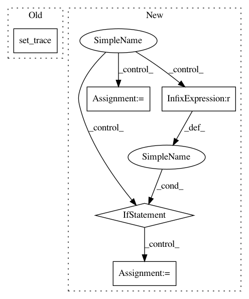

a2736515e4a9e55da3798e6a4fcb8b352a17b987,tfcoreml/_layers.py,,conv2d,#Any#Any#,98
Before Change
W = context.consts[W_name]
import ipdb
ipdb.set_trace()
inp_shape = context.shape_dict[x_name]
out_shape = context.shape_dict[output_name]
After Change
"maximum value of quantized weights not available")
min_W = context.consts[op.inputs[4].name]
max_W = context.consts[op.inputs[5].name]
if op.get_attr("Tfilter") == tf.quint8:
W = ((max_W - min_W)/255.0) * W + min_W
else:
assert False, (
"Only uint8 weights handled currently by the converter")
context.translated[compat.as_bytes(op.outputs[1].name)] = True
context.translated[compat.as_bytes(op.outputs[2].name)] = True
inp_shape = context.shape_dict[x_name]
out_shape = context.shape_dict[output_name]
In pattern: SUPERPATTERN
Frequency: 3
Non-data size: 5
Instances
Project Name: tf-coreml/tf-coreml
Commit Name: a2736515e4a9e55da3798e6a4fcb8b352a17b987
Time: 2017-11-08
Author: awadhwa@apple.com
File Name: tfcoreml/_layers.py
Class Name:
Method Name: conv2d
Project Name: jsalt18-sentence-repl/jiant
Commit Name: 2573c649518391ada6214cfc72d20421dfac4072
Time: 2018-03-16
Author: wang.alex.c@gmail.com
File Name: src/preprocess.py
Class Name:
Method Name: get_embeddings
Project Name: azavea/raster-vision
Commit Name: afeec8a22c2936dd9b2a94eec64cd89442fe9598
Time: 2019-01-03
Author: jmcclain@azavea.com
File Name: rastervision/data/label_store/semantic_segmentation_raster_store.py
Class Name: SemanticSegmentationRasterStore
Method Name: save